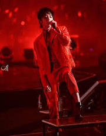

Nú er komið að því að hanna vefsíðu sem gæti verið einskonar ferilskrá ásamt efnisyfirliti yfir
verkefnin sem unnin eru í Vefsíðuhönnun og fleiri áföngum. Uppbygging (layout), letur- og litaval
er í þínum höndum. Tilvalið er að nota uppsetninguna úr 4. verkefni sem grunn (template).
Áður en myndir eru settar í vefsíðu þarf að aðlaga myndirnar í myndvinnsluforriti ss Photoshop þannig að þær séu í réttri stærð og fljótar að hlaðast inn á vefsíðuna.
Veldu myndefni af Youtube og settu á vefsíðuna. Myndefnið getur verið hluti af áhugamálum þínum.
Settu .mp3 hljóðskrá á vefsíðuna þína. Hljóðskráin getur verið hluti af áhugamálum þínum ss. tónlist.
Settu „Google“ kort á vefsíðuna þína. –t.d. getur kortið vísað á heimilisfang þitt, skóla eða stað sem tengist áhugamálum þínum.
He is also known as HuaHua (花花), is a Chinese singer and songwriter. He rose to fame after winning the 2013 Super Boy singing contest produced by Hunan TV, China. Hua is well known for his powerful vocals, dramatic stage performance and talents in composing. He is often recognized as one of the most influential singer-songwriters under 30 in China.
Áhugamál
Myndir
He is interested in anime and favourite anime is One Piece. Some of the other anime he likes are Assassination Classroom, Tokyo Ghoul, Naruto, Dragonball, One Punch Man, Attack on Titan, Gintama, and Pokemon. His favourite character in Naruto is Orochimaru. He has a lot of figurines at home and really likes Kaneki. He also has a Chopper plush, Chopper hat, Kaneki’s mask, Dragonball pouch and other things!
His favourite color is red. In Hua Chenyu’s first ever public appearance on Hunan TV’s Superboy 2013 audition, Hua sang a self-written song with no words, only varied forms of humming. The media dubbed it “The Martian Language” and called Hua “The Martian Boy”, since “from Mars” is a common Chinese expression describing weird or inexplicable things. The name stuck and Hua later branded his concerts “Mars Concert”. The iron-rich rocks prevalent on Mars give the planet a reddish hue. And the Chinese word for Mars means “planet of fire” literally, so Mars is typically represented by the color red in Chinese culture. Red has been the theme color in most of Hua Chenyu’s artwork designs. Hua Chenyu’s fans call themselves Martians, or sometimes ET for short.
Hua is also an avid tea drinker and loves playing snooker and Go in his spare time. He maintains a life style vaguely resembling that of an octogenarian’s where tea drinking, star gazing, zazen practice, playing Go with himself, staying in the bedroom for days without venturing out and the likes are the norm.

Kvikmynd
In Episode 10 of Singer 2018, Hua Chenyu performed a soul-wrenching rendition of “Fake Monk” that incorporated snippets from his various lyric-less songs with a piano and his vocals as the only instruments. Hua dredged up painful memories of his extremely lonely childhood and laid bare his past demons in front of the audience. Throughout the years, Hua has written many, many songs in solitude, the majority of which he never intends to publish, deeming them too private or too dark for public consumption.
Hljóðskrá
Hua Hua said The Giant Deer is the most favourite song he has written. It's the first song for his third solo album and it was released on June 23. The Giant Deer is the most beautiful song i have heard.
Staðsetning á korti
The 2018 Mars Concerts were held on September 8-9 at Beijing National Stadium (also known as the Bird's Nest). Tickets for the September 8 concert were sold out in 1 minute and 59 seconds. A second date was added and was again sold out in 2 minutes and 58 seconds. The concerts made Hua the youngest solo act and first solo artist under thirty to ever hold a concert, let alone two, at the Bird’s Nest.